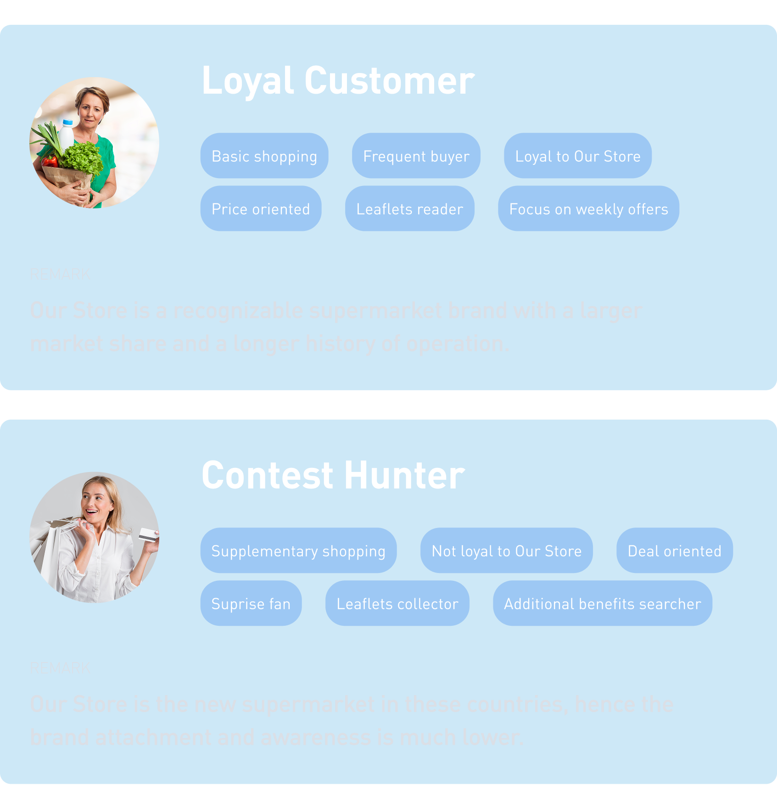

Project Description
As the Design Lead on this project, I managed a small design team and oversaw the entire creative process from roadmap creation and strategic planning to design handover and feedback sessions. My role included collaborating closely with stakeholders, conducting interviews and workshops, and ensuring our process was aligned with each market’s unique needs while maintaining global brand consistency. Working across multiple markets—with varying market sizes and strategies—posed the unique challenge of unifying disparate design approaches into one scalable system.
ProblemOur key challenges centered on:
- Design Inconsistencies:Different countries had been using distinct visual styles and design systems, leading to fragmentation across newsletters.
- Divergent Stakeholder Needs:Each market maintained its own strategy and user expectations, resulting in a lack of uniformity.
- High Operational Costs:Weekly production was costly due to reliance on external agencies and a complex process for creating graphic materials.
- Insufficient Engagement:Newsletters were underperforming in terms of profit, with low personalization, excessive content, and high bounce rates.

Process
The project was driven by both research and iterative design, broken down into several key phases:
Desk Research- User Tracking and Analytics:We analyzed usage data to identify which elements were most engaging or notably missing.
- Market Research:We reviewed existing country-specific analysis files to understand prior findings and leverage available data.
- Email Analysis:By gathering and reviewing all sent newsletters, we identified display issues, inconsistencies, and variances in strategy across markets.
- Country Workshops:Seven workshops were conducted with local marketing teams to map out email creation processes, strategic goals, and target user segments.
- User Interviews:We completed in-depth interviews with eight newsletter users to capture their expectations and pain points.

Based on our findings, we defined two primary user segments:
- Loyal Customers:Regular readers familiar with the brand, who closely follow daily newsletter content.
- Contest Hunters:Users who subscribe primarily to access exclusive offers or contest entries.

Key problems identified included design fragmentation, low user engagement, poor personalization, overwhelming content, and inefficiencies in the email creation process.
Ideation
During the ideation phase, we explored several approaches to address the challenges of inconsistent newsletter designs while meeting diverse market strategies:
- Adjusting to the Existing Design System:We considered tailoring the current design system to meet the specific needs of newsletters. Although this allowed for greater independence and flexibility, it risked increasing implementation and maintenance costs—and could still lead to inconsistencies across markets due to varied local adaptations.
- Fixed Template per Country:Another option was to provide a single, dedicated template for each market. While this approach would lower production costs and streamline the process, it lacked the adaptability needed to accommodate evolving market strategies and the distinct preferences of different user groups.
- Modular Content Block Approach (Chosen Solution):Ultimately, we decided to implement a modular system of adjustable content blocks. This solution enables each country to assemble newsletters according to their specific needs while maintaining a unified brand experience. The modular components are pre-tested for efficacy, ensuring a faster, cost-effective creation process that upholds design consistency and fosters brand trust across all markets.
Design
WireframesOur design phase was driven by the goal of creating a consistent, user-centered system that could scale across diverse markets without losing flexibility.
We started with wireframing, focusing on identifying and standardizing the most commonly used newsletter components. Rather than reinventing the wheel, we carefully reimagined these elements to bring coherence to the overall structure, while still allowing space for localized storytelling.
With mobile usage dominating user behavior, we designed with a mobile-first mindset. Each newsletter layout was structured to prioritize scannability, clarity, and quick engagement on smaller screens. We also introduced a flexible, default layout tailored to different newsletter types—serving as a solid foundation that countries could adapt based on their market size, user preferences, and performance data.
Once our wireframes were ready, we moved into the first round of feedback sessions with local marketing teams. This step was crucial. We didn’t just want approval—we wanted alignment. Their input validated our direction: the modular approach not only supported their unique strategies but also made the newsletter creation process faster, more efficient, and more aligned with the overall brand.
Mockups & Iterations
Using the adjusted design system, we enhanced our wireframes into high-fidelity mockups. Countries submitted around 50 detailed suggestions. To process this efficiently, we categorized and prioritized the feedback into actionable themes. Key adjustments based on feedback included:
This feedback loop allowed us to refine the design system while keeping it scalable, modular, and truly adaptable to each market's unique needs — laying the foundation for a consistent, yet flexible, newsletter experience across regions.
Final Outcome
The final designs were approved by stakeholders in all target markets, establishing a consistent yet flexible template system for newsletters. Key outcomes included:
- Unified Design Consistency: Bringing cohesion to the brand across different markets while allowing for local customization.
- Increased Operational Efficiency: Reducing reliance on external agencies and lowering production costs.
- Enhanced User Engagement: Improved content structure and personalization set the stage for increased click-through rates and higher engagement, ultimately driving store visits.
- Data-Driven Iterations: Ongoing analytics will continuously inform adjustments to further optimize content and design.
Summary
The project delivered a scalable, modular newsletter system that each country can adapt to their local needs and campaign goals. The new design ensures brand consistency, simplifies the creation process, and reduces reliance on external agencies.
Thanks to built-in analytics, countries can track performance and optimize content. The solution also supports future personalization tied to the loyalty program, making newsletters more relevant and engaging. Overall, the redesign brought clarity, efficiency, and a strong foundation for future growth.